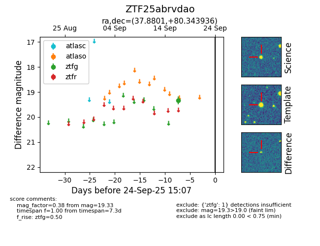

FINK: ZTF25abrvdao
Lasair: ZTF25abrvdao
ALeRCE: ZTF25abrvdao
ZTF25abrvdao (ztf,fink)
equatorial (ra, dec) = (37.8801,+80.34394)
galactic (l, b) = (127.2175,+18.31567)

last ztfg=19.33
1 ztfg detections